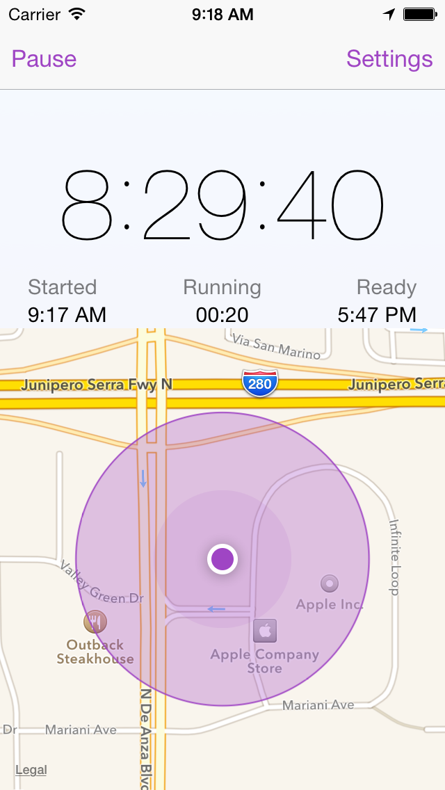

Time to Go is a location based work timer that supports in maintaining your Work / Life balance
Say "NO MORE" to keeping track of when you began working. Just setup your working location, how long you work and Time to Go will trigger an alarm when it's... (you guessed it) ...Time to Go!
simple


customizable
advanced